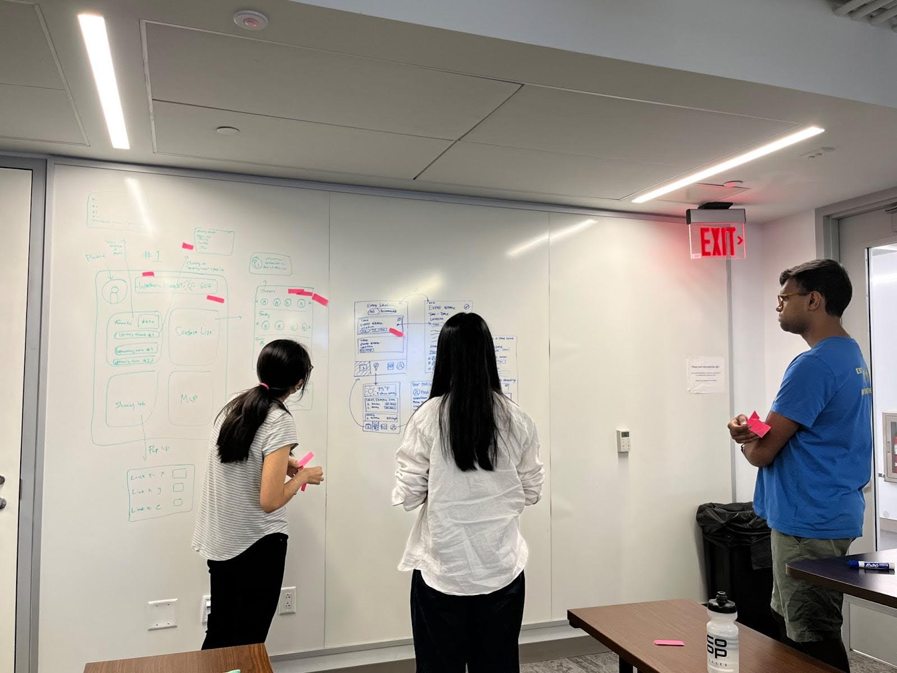

Final Prototype
The app has a responsive design and works for all screen sizes, although the mobile screens are shown above. View it here.
Background
Our client, the Information Science department at Cornell, asked us to create an app for prospective PhD students who are attending the College of Computing and Information Science (CIS)’s PhD Visit Day. Visit Day is an opportunity for prospective students to visit the Ithaca campus, interact with faculty, and meet their potential peers. It also helps inform their decision in regard to accepting the admissions offer at Cornell or not.
The app is an opportunity to the prospective students’ experience during a hectic schedule and ensure a successful Visit Day.
User Research
Our targeted users were prospective CIS PhD students attending Visit Day. We wanted to understand users' overall attitudes towards the PhD Visit Day and what they consider to be a positive experience. To do this, I conducted a total of 6 semi-structured interviews with current Information Science PhD students who previously attended the event.
By creating an affinity diagram, we learned that prospective students had a desire to: (a) understand research areas covered at Cornell, (b) understand the program by talking to people, (c) make connections with peers, (d) have a productive day, (e) know what campus is like, and (f) know what to prepare before leaving for the visit days.
Key Findings
- When selecting doctoral programs, they want to ensure it is a good fit for their research interests.
- PhD students were unfamiliar with the Ithaca region before being admitted.
- Prospective students expressed an interest in meeting other prospective students in a casual setting.
- The itinerary was overwhelming for many prospective students and logistically challenging for some.
- Students prefer using a mobile application to check the itinerary.
We learned that there is a need for a mobile application that includes itinerary management, focusing on research, and facilitates social bonding between potential peers.
User Goals
From our data analysis, we identified three main user goals to address in our app and improve user experience on Visit Day:
-
Prioritize attending events with labs and professors that align with their research interests
-
Make connections with other students more conveniently
-
Move efficiently between activities
Persona
To summarize our understanding of the target users, we created a persona called Jack Dorsey.
Jack Dorsey
- Age: 25
- Hometown: San Francisco
- PhD Program: Information Science
Biography
Jack is an accepted CIS Ph.D. student who received offers from both University of California, Berkeley and Cornell University. He is facing a tough decision on which program to choose. Since he has never visited Cornell before, he sees the visit day as a chance to gain a deeper understanding of the program and the location, which will help him make his final decision. He wants to tour different labs to see which best fits his research interests. He also wants to connect with other prospective and current PhD students at Cornell with the latter helping him learn more about the student experience. Because Jack has never been to Cornell’s Ithaca campus before, he is relying heavily on the itinerary and information provided by the department to navigate his way around during his visit.
UX Design
Brainstorming
We discussed potential features that could address the user’s goals. We came up with a list of requirements that are essential for solving the major user goals we identified. There were other features we would consider adding to the app depending on feasibility and time limitations.
Essential Features:
- Upcoming events
- List of people attending each event
- Contact info of other prospective students
- Recommended events that match users’ interests
- Sign up form (interests & contact info)
Potential Additional Features:
- Google maps integration
- Weather
- Campus tours
- Subway maps
- Links to hotels/restaurants
Design Process
-
Each team member created a sketch of their design for the app.
-
We performed a “gallery walk” with each team member’s design and placed a sticky note on aspects of the design that appealed to them. This helped us identify features that we gravitated towards and commonalities between members’ designs.
 - Each member presented their designs and the listening team members provided feedback on the designs. Some talking points were debating the use of profile pictures to fight bias, feasibility of implementing third party apps, whether or not users really needed a link to the reimbursement form, user flows, and filter implementation/usefulness for research areas.
- We selected features of each team member’s design that we wanted to include in our final design.
Final Wireframe
Home: The app opens to display the event schedule with an overview of upcoming events. Tags help denote different research fields for each event. Since users may not be interested in all events, there is a toggle to focus on recommended events based on their research areas.
Event Details: Users can access more detailed event information, including a list of tentative attendees to help users connect with Cornell faculty and other prospective students at the event. To appear on the tentative attendees list, users must click on the checkmark at the top right of the screen.
Faculty Profile: This screen lays out all the information about faculty members a user might find useful in regard to learning more about them and potentially connecting with them. This includes contact information, research areas, and a brief biography of the person.
Local Tips: This screen provides users with popular local spots, including restaurants and sightseeing. Each entry has an image carousel, description, and relevant tags.
Directory: The directory contains a list of Cornell’s faculty and prospective PhD students, which are separated into two tabs. The directory gives users another way to learn about people. By clicking on each profile, the user is taken to a detailed profile screen.
User’s Profile: It contains their contact information, research interests, and faculty members they have indicated interest in. All of these preferences would be set during the app onboarding process with a quick form. The profile can be viewed by all other users on the app.
App Prototype
Based on the design, I led the development of a high-fidelity web app prototype using Vue.js, Bootstrap, HTML, and CSS with my team. The app was originally designed for mobile devices because we expect users to rely on their phones on Visit Day according to our user research, but it also responsive.
Due to time constraints, we ultimately decided to consolidate the design of the faculty and students' profile because they shared similar components, such as the contact information and research areas badges.
The prototype demonstrates the features that Jack can use when he goes to visit Cornell. In our prototype, we assume that Jack has already completed the onboarding form and set up his profile, allowing us to focus on the app’s functionality and users’ interactions with the app’s main features.
Try the Prototype!